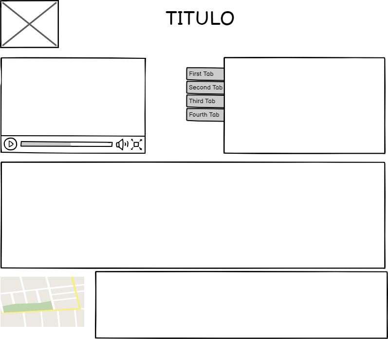

Propiedades básicas de CSS, Display: inline, block, inline-block
Objetivo General
Diseñar un OVI donde explicaremos la tema tematica Propiedades básicas de CSS, Display: inline, block, inline-block curso diseño paginas web
Objetivos Especificos
- Objetivo especifico 1: como realizar la creacion de un entorno de pagina web
- Objetivo especifico 2: aplicar los conocimentos basicos para la creacion de una pagina web
- Objetivo especifico 3:desarrollar el tema panteado para esta actividad Propiedades básicas de CSS exponiendo su contenido
MATERIALES
CONTENIDO: Propiedades básicas de CSS, Display: inline, block, inline-block
Una duda típica a la hora de trabajar con HTML y CSS es tener claras las diferencias que existen entre elementos de bloque y elementos en línea, así que vamos a intentar arrojar un poco de luz sobre este tema:
Cambio de tipo de visualización y un tercer tipo intermedio
Bien, aparte de este comportamiento por defecto, es posible cambiar el modo en el que se visualiza/renderiza cualquier elemento HTML de una página usando la propiedad CSS llamada display.Esta propiedad puede tomar muchos valores diferentes, pero los más comunes son estos tres:
- block: hace que el comportamiento del elemento sea como un bloque.
- inline: el elemento se renderizará en línea con otros elementos.
- inline-block: el elemento tendrá un comportamiento mezcla entre los dos anteriores, que ahora voy a describir.
Maquetacion
